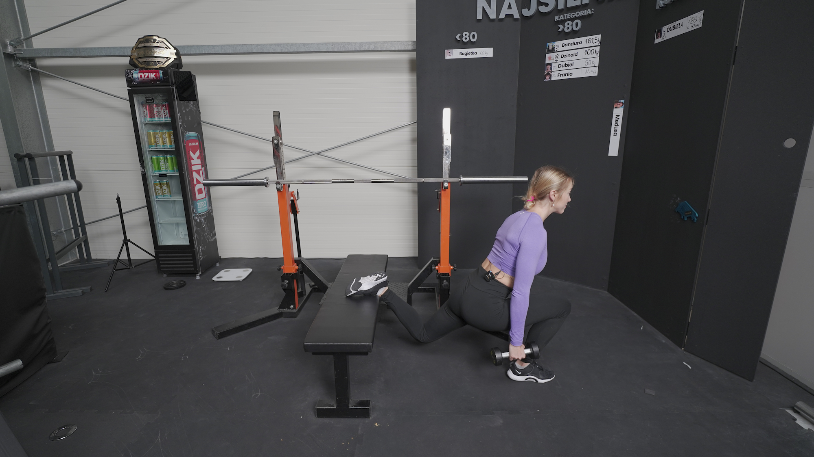
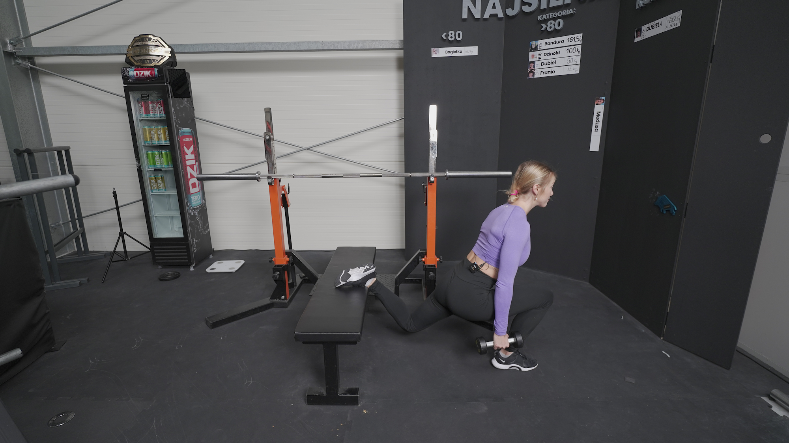

PRZYSIAD BUŁGARSKI
 

1. Ustaw ławeczkę/skrzynię tak by sięgała wysokości Twojego kolana lub połowy piszczela.
2. Jeżeli chcesz bardziej zaangażować do pracy mięśnie czworogłowe uda stań nieco bliżej ławeczki. Jeśli chcesz zaangażować bardziej pośladki stań dalej od ławeczki.
3. Stopę możesz zarówno położyć na ławce stroną grzbietową jak i oprzeć na palcach.
4. Jeżeli chcesz mocniej zaangażować do pracy pośladek - pochyl się delikatnie w przód.
5. Rozpocznij ruch schodzenia w dół, kierując kolano na zewnątrz.
6. Zejdź tak nisko, jak pozwala Ci Twoja mobilność.
7. W górnej fazie zepnij pośladek.
8. Jeźeli przystąpisz do ćwiczenia z ciężarem, hantle złap w obie ręce, ściągnij i obniż łopatki.